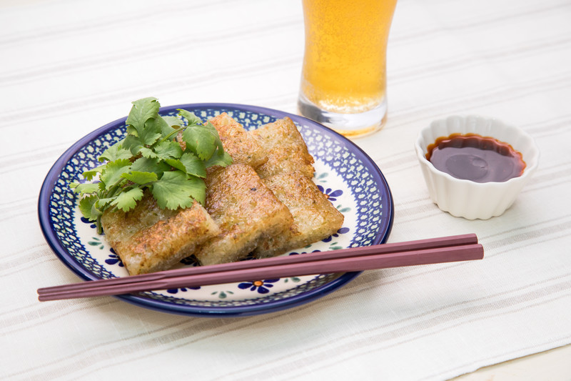

だいこん餅

材料 2人分
- 大根
- 1/3本
- ⚫ かつお節
- 2g
- ⚫ 青のり
- 小さじ1
- ⚫ 醤油
- 小さじ1
- ⚫ 七味唐辛子
- 小さじ1/6
- ⚫ 片栗粉
- 100g
- ぽん酢
- 大さじ2
- ラー油
- 小さじ1/2
作り方
1
大根をすりおろして軽く水気を切ったら、ボウルに入れ、⚫を加えて混ぜます。
2
卵焼き器にごま油を引いて中火で熱して1を流し入れ、両面をこんがりと焼き、食べやすい大きに切って器に盛ります。
3
ぽん酢、ラー油を混ぜて添えれば完成です。